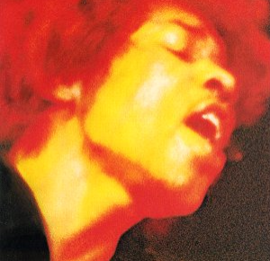

<main class="window">
    <div class="clearfix">
    
    <div>
        Electric Ladyland is the third and final studio album by the Jimi Hendrix Experience, released in October 1968.
         A double album, it was the only record from the Experience with production solely credited to Hendrix.
         The band's most commercially successful release and its only number one album, it was released by Reprise Records in the United States on October 16, 1968, 
         and by Track Records in the UK nine days later. By mid-November, it had reached number 1 on the Billboard Top LPs chart, spending two weeks there. 
         In the UK it peaked at number 6, where it spent 12 weeks on the British charts. 

        Electric Ladyland includes a cover of Bob Dylan's "All Along the Watchtower", which became the Experience's best-selling single, 
        reaching number six in the UK and number 20 in the United States. Although the album confounded critics upon its release, 
        it has since been viewed as one of Hendrix's best works and one of the greatest albums of all time, being featured on various "greatest albums" lists, 
        including Q's 2003 list of the 100 greatest albums and various editions of Rolling Stone's list of the "500 Greatest Albums of All Time", 
        on which it was ranked 53rd in the 2020 iteration. 
   
        
        

<h2>Some of the Tracks</h2>
    <ul>
        <li> ...And the Gods Made Love </li>
        <li>Have You Ever Been (To Electric Ladyland) </li>
        <li>Crosstown Traffic </li>
        <li>Voodoo Chile </li>
        <li>Little Miss Strange </li>
        <li>Long Hot Summer Night </li>
        <li>Come On (Let the Good Times Roll) </li>
        <li>Gypsy Eyes </li>
        <li>Burning of the Midnight Lamp </li>
        
      
    </ul>
    </div>
    </div>
</main>